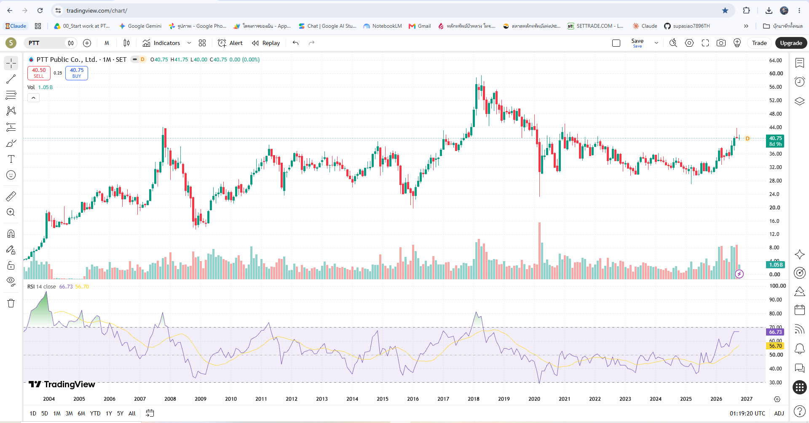
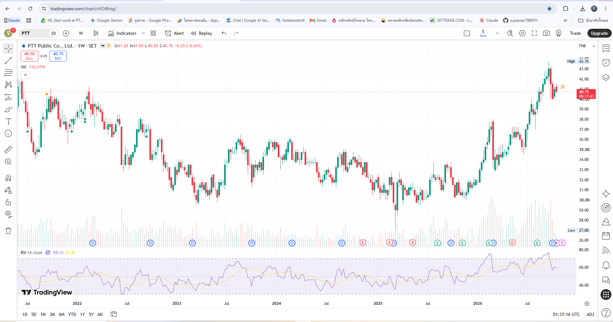

บริษัท ปตท. จำกัด (มหาชน) · อ้างอิงงบการเงินปี 2568 (56-1 One Report) และกราฟ TF Month / TF Week ณ วันที่ 22 ต.ค. 2569
คูเมืองทางเศรษฐกิจ (Economic Moat): PTT มีสถานะผูกขาดโดยธรรมชาติ (Natural Monopoly) ในโครงสร้างพื้นฐานพลังงานหลักของไทย ทั้งระบบท่อส่งก๊าซธรรมชาติ โรงแยกก๊าซธรรมชาติ (GSP) และสถานีรับ-จ่าย LNG พร้อมถือหุ้นใหญ่ในบริษัทแกนนำครบวงจร (PTTEP, PTTGC, TOP, IRPC, GPSC, OR และธุรกิจใหม่ด้าน Life Sciences)
| รายการสำคัญ | ปี 2566 (2023) | ปี 2567 (2024) | ปี 2568 (2025) | การวิเคราะห์เชิงคุณภาพ |
|---|---|---|---|---|
| รายได้จากการขาย (Revenue) | 3,144,551 ล้าน฿ | 3,090,453 ล้าน฿ | 2,662,145 ล้าน฿ | ลดลง -13.9% YoY ตามทิศทางราคาน้ำมันโลกที่ลดลงสู่ระดับ 69.2 USD/bbl |
| EBITDA | 426,895 ล้าน฿ | 396,234 ล้าน฿ | 332,849 ล้าน฿ | ลดลง -16.0% YoY จากส่วนต่างราคาปิโตรเคมีและธุรกิจก๊าซฯ ที่ชะลอตัว |
| กำไรสุทธิส่วนของบริษัทใหญ่ | 112,024 ล้าน฿ | 90,072 ล้าน฿ | 90,166 ล้าน฿ | ทรงตัว +0.1% YoY (ได้แรงหนุนจากกำไรอัตราแลกเปลี่ยน 20,016 ล้าน฿ และรายการพิเศษสุทธิ +14,400 ล้าน฿) |
| กำไรต่อหุ้น (EPS) / มูลค่าทางบัญชี (BVPS) | 3.92 / 39.25 บาท | 3.15 / 40.25 บาท | 3.15 / 39.80 บาท | รักษาระดับ EPS ที่ 3.15 บาท และฐานสินทรัพย์ต่อหุ้นแน่นหนาเกือบ 40 บาท |
| ROE / ROA | 10.35% / 5.71% | 7.94% / 4.65% | 7.92% / 4.64% | ประคองตัวได้ดีในรอบวัฏจักรอุตสาหกรรมขาลง |
| IBD/E (หนี้สินที่มีภาระดอกเบี้ยต่อทุน) | 0.67 เท่า | 0.63 เท่า | 0.60 เท่า | ลดลงต่อเนื่อง (Net IBD/E เพียง 0.35 เท่า) และมีเงินสดรวมเงินลงทุนระยะสั้นสูงถึง 392,756 ล้าน฿ |
| กระแสเงินสดดำเนินงาน (OCF) / FCF | 406,690 / ~226,395 ล้าน฿ | 369,243 / ~212,447 ล้าน฿ | 299,366 / ~130,731 ล้าน฿ | OCF สูงกว่ากำไรสุทธิถึง 3.3 เท่า รองรับการจ่ายปันผลระดับ 6.5 หมื่นล้านบาท/ปี ได้อย่างปลอดภัย |
| วิธีประเมินมูลค่า (Valuation Method) | สมมติฐานหลัก | มูลค่าเหมาะสม (บาท/หุ้น) |
|---|---|---|
| 1. Discounted Cash Flow (DCF) | Attributable FCF ~1.05–1.15 แสนล้าน฿, WACC 8.0%, Terminal Growth 1.5%, หัก Conglomerate Discount 20% | 38.40 บาท |
| 2. Relative P/E Valuation | EPS 3.15 บาท × Target P/E 11.5 เท่า (ค่าเฉลี่ยระยะยาวของหุ้นพลังงานปันผล) | 36.23 บาท |
| 3. Graham Number | √(22.5 × EPS 3.15 × BVPS 39.80) สะท้อนมูลค่าสินทรัพย์ป้องกันความเสี่ยง | 53.11 บาท |
| 4. Dividend Discount Model (DDM) | คิดแบบอนุรักษนิยมจากปันผลปกติ 2.10 บาท (ไม่รวมปันผลพิเศษ 0.20 บาท), r = 8.0%, g = 2.5% | 38.18 บาท |
| มูลค่าเหมาะสมเฉลี่ย (Base Case — เฉลี่ย 4 วิธี) | 41.48 บาท (โซนรับ MoS 15–25% = 31.10–35.25 บาท) | |
| หมวดการประเมิน | คะแนนเต็ม | ที่ราคา 32.00 บาท (สิ้นปี 2568) | ที่ราคา 40.75 บาท (กราฟปัจจุบัน) | คำอธิบาย |
|---|---|---|---|---|
| หมวด A: ความแข็งแกร่งธุรกิจและงบการเงิน | 10 | 10 / 10 | 10 / 10 | OCF แกร่งมาก, Net IBD/E ต่ำเพียง 0.35x, ผูกขาดท่อก๊าซธรรมชาติ |
| หมวด B: ความถูกแพงของราคา (Valuation) | 10 | 7 / 10 (MoS +22.85%, P/BV 0.80x) | 4 / 10 (MoS +1.76%, P/BV 1.02x) | เมื่อราคาขึ้นมาที่ 40.75 บาท แต้มต่อ Margin of Safety หายไปเกือบหมด |
| หมวด C: คุณภาพเงินปันผล (Dividend) | 6 | 6 / 6 (Gross Yield 7.19%) | 6 / 6 (Gross Yield 5.64%) | ปันผลปกติสุทธิหลังภาษีที่ 40.75 บาท เหลือ 4.64% (รวมปันผลพิเศษได้ 5.08%) |
| หมวด D: ธรรมาภิบาลและความยั่งยืน | 4 | 4 / 4 | 4 / 4 | CGR 5 ดาว, สมาชิก DJSI, ปรับพอร์ตมุ่งสู่ LNG และ Life Sciences ชัดเจน |
| รวมคะแนน VI Scorecard | 30 | 27 / 30 (Strong Buy) | 24 / 30 (รอสะสมเมื่อย่อตัว) | หุ้นดี แต่ราคาปัจจุบันไม่ถูก ต้องรอจังหวะย่อตัว |
ปัจจุบัน PTT ไม่ได้อยู่ใกล้ RSI 30 และไม่ใช่ช่วงต้นรอบแล้ว ทั้งในกราฟรายเดือน (RSI = 66.73) และรายสัปดาห์ (RSI = 59.13) โดยราคาเพิ่งวิ่งจากฐาน 30.50 บาท ขึ้นไปทำจุดสูงสุดที่ 43.75 บาท (บวกขึ้นมา +43%) แล้วกำลังเริ่มพักฐานลงมาที่ 40.75 บาท จึงควร ถือเงินสดรอรับเมื่อย่อตัวตามโซนแนวรับ ไม่ควรไล่ราคาตรงนี้
| ลำดับไม้สะสม | โซนแนวรับเป้าหมาย | โครงสร้างทางเทคนิค (TF Week) | Margin of Safety (เทียบ 41.48฿) | Gross Yield (ปกติ 2.10฿ / รวมพิเศษ 2.30฿) | สัดส่วนที่แนะนำ |
|---|---|---|---|---|---|
| ราคาปัจจุบัน (40.75 บาท) | ยังไม่เข้าซื้อ | เพิ่งย่อจากยอด 43.75฿, RSI Week (59.13) เพิ่งตัดเส้นค่าเฉลี่ย (67.85) ลง | +1.76% | 5.15% / 5.64% | 0% (Wait & See) |
| ไม้ที่ 1 (รับย่อตัวแรก) | 37.00 – 38.00 บาท | หัวแนวต้านเดิม (Breakout Neckline) ช่วงต้นปี–กลางปี 2026 (รอ RSI Week พักแถว 45–50) | 8.4% – 10.8% | 5.53%–5.68% / 6.05%–6.22% | 20% – 30% |
| ไม้ที่ 2 (โซนสะสมหลัก VI) | 33.50 – 35.00 บาท | ฐานพักตัว Higher Low ช่วง พ.ค.–ก.ค. 2026 (ผ่านเกณฑ์ MoS > 15%) | 15.6% – 19.2% | 6.00%–6.27% / 6.57%–6.87% | 40% – 50% |
| ไม้ที่ 3 (โซนปลอดภัยสูง) | 30.50 – 32.50 บาท | ฐานสะสมใหญ่ปี 2024–2025 (กรณีตลาดปรับฐานแรงจน RSI Week ลงใกล้ 35–40) | 21.6% – 26.5% | 6.46%–6.89% / 7.08%–7.54% | 20% – 30% |
แสดงภาพใหญ่ตั้งแต่ปี 2004–2026: ราคาปัจจุบัน 40.75 บาท ชนแนวต้านยอดเดิมปี 2021–2022 แถว 40.50–42.00 บาท และ RSI รายเดือนอยู่ที่ 66.73

แสดงจังหวะระยะกลาง: ราคาทำจุดสูงสุดที่ 43.75 บาท (RSI Week ทะลุ 77) ก่อนย่อตัวลงมาที่ 40.75 บาท โดยเส้น RSI (59.13) เพิ่งตัดเส้นค่าเฉลี่ย (67.85) ลงมา
